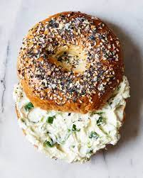

Home
Bagel with Cream Cheese

Hot and toasty bagel with smooth and mouth-watering cream cheese(salmon cream
cheese can be used as an alernative of course)
Ingredients
- Bagel
- Cream cheese, regular or salmon
Directions
- Toast bagel in toaster or conventional oven(but that would be weird)
- Spread cream cheese on bagel